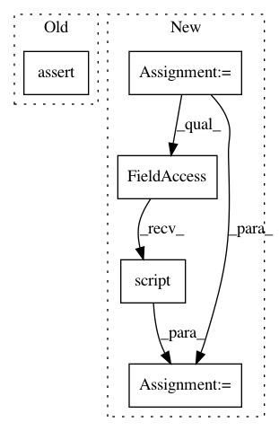

2c28b743b04d94f5cae7cdaef7fa21ede7adb4f6,test/test_torchscript_consistency.py,Transforms,_assert_consistency,#Transforms#Any#Any#,534
Before Change
def _assert_consistency(self, transform, tensor):
tensor = tensor.to(device=self.device, dtype=self.dtype)
transform = transform.to(device=self.device, dtype=self.dtype)
_assert_transforms_consistency(transform, tensor)
def test_Spectrogram(self):
tensor = torch.rand((1, 1000))
self._assert_consistency(T.Spectrogram(), tensor)
After Change
tensor = tensor.to(device=self.device, dtype=self.dtype)
transform = transform.to(device=self.device, dtype=self.dtype)
ts_transform = torch.jit.script(transform)
output = transform(tensor)
ts_output = ts_transform(tensor)
self.assertEqual(ts_output, output)
In pattern: SUPERPATTERN
Frequency: 4
Non-data size: 5
Instances
Project Name: pytorch/audio
Commit Name: 2c28b743b04d94f5cae7cdaef7fa21ede7adb4f6
Time: 2020-05-14
Author: 855818+mthrok@users.noreply.github.com
File Name: test/test_torchscript_consistency.py
Class Name: Transforms
Method Name: _assert_consistency
Project Name: pytorch/audio
Commit Name: 2c28b743b04d94f5cae7cdaef7fa21ede7adb4f6
Time: 2020-05-14
Author: 855818+mthrok@users.noreply.github.com
File Name: test/test_torchscript_consistency.py
Class Name: Functional
Method Name: _assert_consistency
Project Name: rusty1s/pytorch_geometric
Commit Name: f0e122eec026c547ac996cd13653724ef48a3ffb
Time: 2020-05-30
Author: matthias.fey@tu-dortmund.de
File Name: test/nn/conv/test_message_passing.py
Class Name:
Method Name: test_my_message_and_aggregate_conv
Project Name: facebookresearch/pythia
Commit Name: d8f9592b209e368e4934b6b429443c2a8673de3f
Time: 2020-10-19
Author: junchen20@fb.com
File Name: tests/models/test_mmbt.py
Class Name: TestMMBTTorchscript
Method Name: test_finetune_model